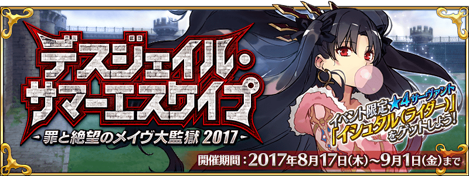
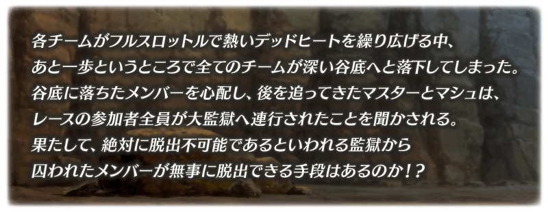
◆活動舉辦期間◆
2017年8月16日(三) 17:008月17日(四) 10:00～8月30日(三) 11:599月1日(五) 11:59
※舉辦期間延長。
※(8/25修正)
◆活動概要◆
舉辦期間限定活動「Death Jail・夏日逃脫 ～罪與絶望的梅芙大監獄2017～」！
實行聲援關卡來收集活動道具，協助被囚禁的Servant們逃脱吧！
此為二部構成活動的第二部。
通過第一部的主線關卡後才能參加。
在第一部的主線關卡通過時期間限定加入的「★4(SR)伊絲塔(Rider)」，通過第二部的主線關卡後就會正式加入。
推進活動以伊絲塔(Rider)的正式加入為目標吧！
◆活動参加條件◆
只限通過「Dead Heat・夏日競賽！ ～夢與希望的伊絲塔盃2017～」的主線關卡的Master才能参加
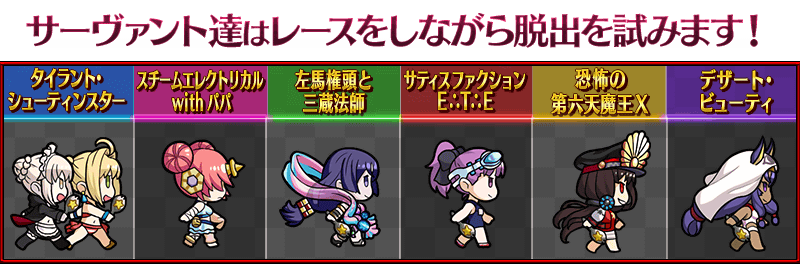
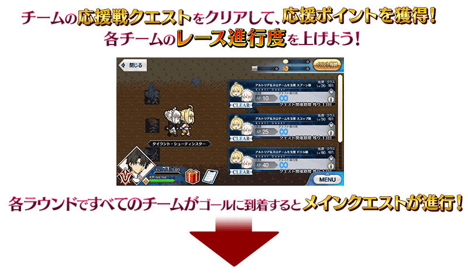
※(8/16修正)
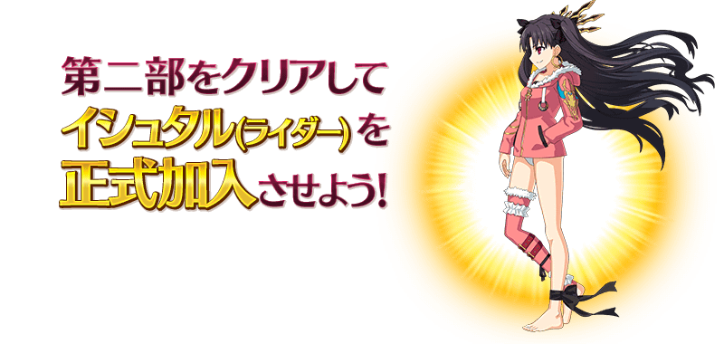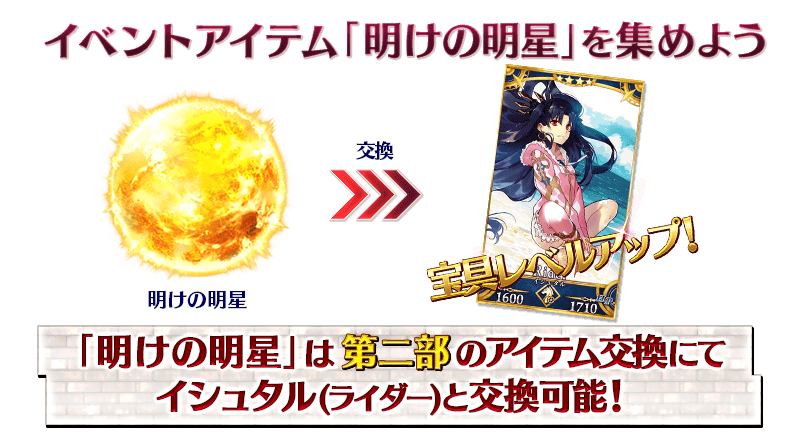
※「黎明之金星」與伊絲塔(Rider)的交換會在伊絲塔(Rider)正式加入後開放。
※「黎明之金星」可從通過第二部的主線關卡後開放的高難易度關卡通過後入手。
隨著主線關卡的進行，會發生6隊競爭名次的「競賽聲援戰(レース応援戦)」。
通過任意想聲援隊伍的聲援戰關卡的話，會獲得「聲援點數(応援ポイント)」，讓該隊伍的競賽進行度上昇。
各隊伍的競賽進行度會根據全部Master的點數合計値來進行。
與其他Master同心協力幫助中意的隊伍的逃脫吧！
全部的隊伍抵達終點，競賽聲援戰結束的話，可獲得高排獲獎隊伍報酬(上位入賞チーム報酬)。
「競賽聲援戰」結束的話會結束現在参加中的圈數，競賽會移動到下個圈數。
◆關於主線關卡的進行◆
競賽中全部的隊伍到達終點的話就會繼續主線關卡。
※在圈數結束的情況，只要通過任意隊伍的聲援戰關卡後，就會顯示競賽排名，能進行主線關卡。
通過主線關卡後競賽會移動到下個圈數。
另外，請注意進入下個圈數將無法回到前1個的圈數。
※請注意根據参加活動的時間點，會有「競賽聲援戰」結束的情況。在該情況不會影響主線關卡的進行，但無法執行聲援戰關卡。
※通過第二部的主線關卡的話，在全體地圖會復活全部的圈數，可反覆執行聲援戰關卡。
| 圈數名 | 競賽聲援戰舉辦期間 |
|---|---|
| 圈數EX1 パッセージ・トゥ・フューチャー |
8月16日(三) 17:00～ |
| 圈數EX2 ？？？ |
圈數1結束後 |
| 圈數EX3 ？？？ |
圈數2結束後 |
| 圈數EX4 ？？？ |
圈數3結束後 |
◆超值攻略方法・其1◆
可在活動道具交換和關卡報酬等獲得的推進道具「出星湯匙」「卡路里肉」「寶具槌子」在各隊伍的聲援戰關卡使用的話，會得到在戰鬥有利的效果。
推進道具，在關卡開始前，可任意選擇1種類使用。
※關卡中的推進道具效果對我方全體＜含候補＞都有作用，直到戰鬥結束都會持續。
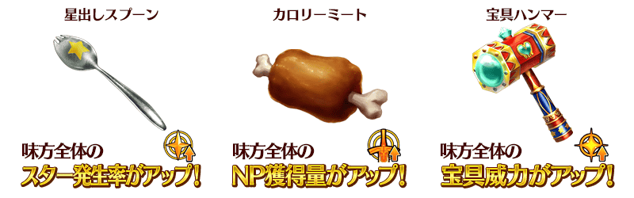
■使用推進道具讓獲得聲援點數提升！
另外使用推進道具通過聲援戰的話，可獲得比平常更多(2倍)的聲援點數。
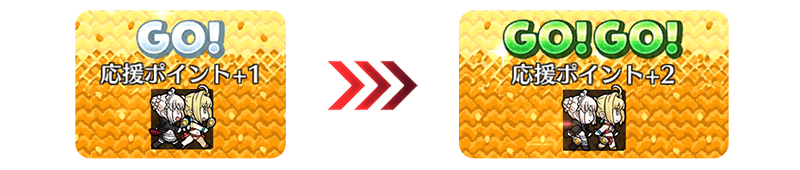
■配合相性更加提升！
各隊伍與推進道具有相性的話，相性良好可獲得更多(3倍)的聲援點數。
◆關於推進道具與各隊伍的相性◆
| 推進道具 | 隊伍名 |
|---|---|
| 出星湯匙 | サティスファクションＥ∴Ｔ∴Ｅ |
| 恐怖の第六天魔王Ｘ | |
| 卡路里肉 | タイラント･シューティンスター |
| デザート･ビューティ | |
| 寶具槌子 | スチームエレクトリカルwithパパ |
| 左馬権頭と三蔵法師 |
◆超值攻略方法・其2◆
賦予對象的Servant活動道具「精選糖球」「泡麵」「康諾特幣」的獲得量提升加成！
關於在期間限定活動「Dead Heat・夏日競賽！ ～夢與希望的伊絲塔盃2017～」與「Death Jail・夏日逃脫 ～罪與絶望的梅芙大監獄2017～」新登場的以下Servant會比其他對象Servant更多活動道具的獲得數。
【對象Servant】
| 職階 | 稀有度 | 名稱 |
|---|---|---|
| Rider | ★★★★★ | 阿爾托莉亞・潘德拉剛〔Alter〕 |
| Caster | ★★★★★ | 尼祿・克勞狄烏斯 |
| Saber | ★★★★ | 弗蘭肯斯坦 |
| Archer | ★★★★ | 海倫娜・布拉瓦茨基 |
| Lancer | ★★★★ | 源頼光 |
| Rider | ★★★★ | 伊絲塔 |
| Assassin | ★★★★ | 尼托克里絲 |
| Berserker | ★★★★ | 織田信長 |
【其他對象Servant】
| 職階 | 稀有度 | 名稱 |
|---|---|---|
| Archer | ★★★★★ | 阿爾托莉亞・潘德拉剛 |
| Archer | ★★★★★ | 新宿的Archer |
| Archer | ★★★★★ | 尼古拉・特斯拉 |
| Lancer | ★★★★★ | 恩奇杜 |
| Lancer | ★★★★★ | 玉藻前 |
| Assassin | ★★★★★ | 謎之女主角X |
| Rider | ★★★★★ | 魁札爾・科亞特爾 |
| Rider | ★★★★★ | 女王梅芙 |
| Caster | ★★★★★ | 玄奘三藏 |
| Caster | ★★★★★ | 不夜城的Caster |
| Berserker | ★★★★★ | 南丁格爾 |
| Archer | ★★★★ | 安妮・伯妮＆瑪莉・瑞德 |
| Lancer | ★★★★ | 清姬 |
| Rider | ★★★★ | 莫德雷德 |
| Assassin | ★★★★ | 卡米拉 |
| Assassin | ★★★★ | 新宿的Assassin |
| Assassin | ★★★★ | 斯卡哈 |
| Caster | ★★★★ | 湯瑪斯・愛迪生 |
| Caster | ★★★★ | 瑪莉・安東尼 |
| Ruler | ★★★★ | 瑪爾大 |
| Avenger | ★★★★ | 戈爾貢 |
| Caster | ★★★ | 查爾斯・巴貝奇 |
※請注意一部與二部做為對象的Servant會有一部份差異。
◆超值攻略方法・其3◆
裝備可在活動道具交換的活動限定概念禮裝「★5(SSR)ダイブ・トゥ・ブルー」的話，「精選糖球」、「泡麵」、「康諾特幣」的掉落獲得數會提升。
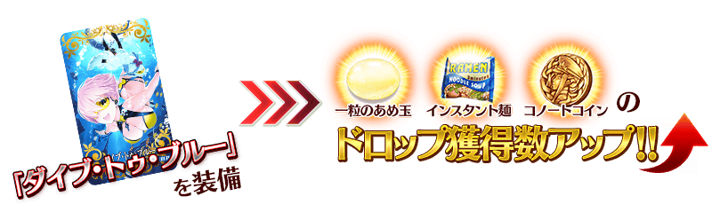
◆超值攻略方法・其4◆
裝備期間限定概念禮裝的話，活動道具「精選糖球」「泡麵」「康諾特幣」各自的獲得數會提升。
※請注意在各關卡的道具掉落率並非100％。
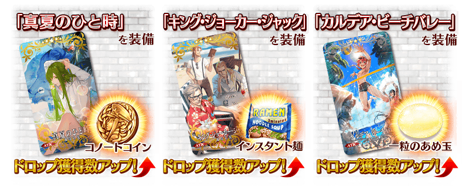
◆超值攻略方法・其5◆
裝備可在第一部的「Dead Heat・夏日競賽！ ～夢與希望的伊絲塔盃2017～Pick Up召喚(每日交替)」入手的期間限定概念禮裝的話，活動道具「精選糖球」「泡麵」「康諾特幣」各自的獲得數會提升。
※請注意在各關卡的道具掉落率並非100％。

| 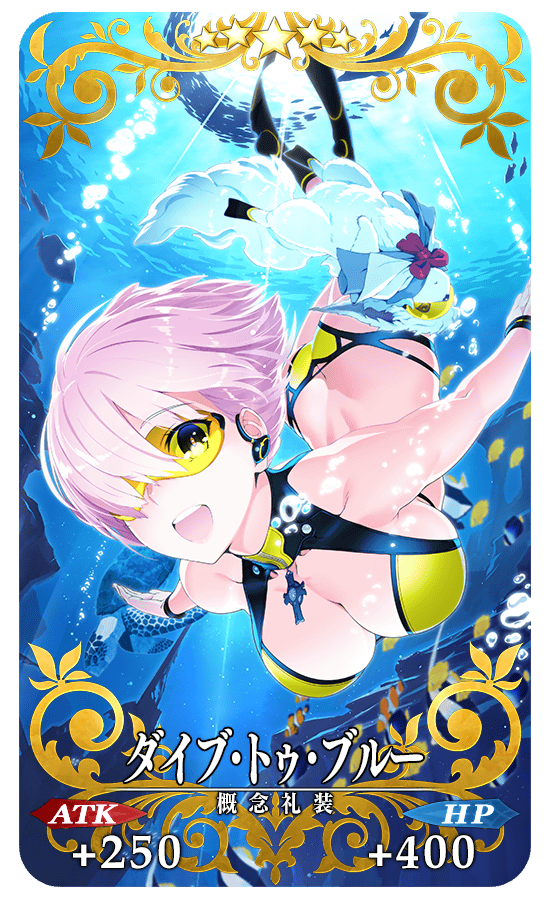 |
◆活動限定概念禮裝◆ |
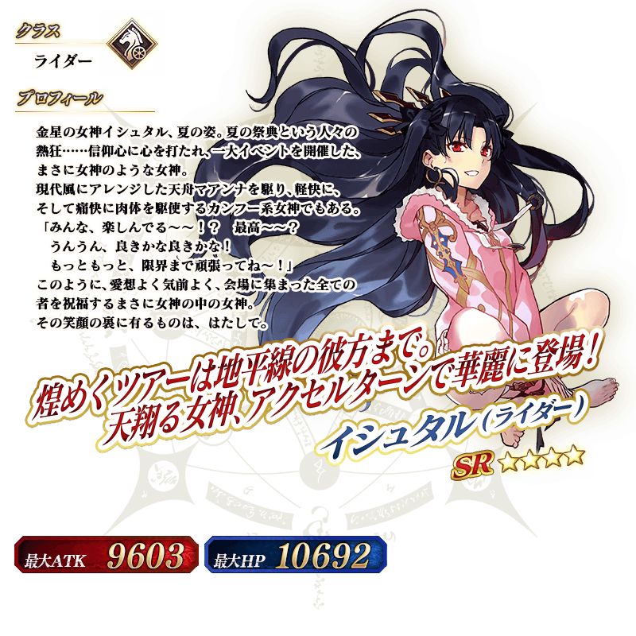
※「黎明之金星」與伊絲塔(Rider)的交換會在伊絲塔(Rider)正式加入後開放。
※「黎明之金星」可從通過第二部的主線關卡後開放的高難易度關卡通過後入手。
◆交換方法◆
交換期間:2017年8月16日(三) 17:008月17日(四) 10:00～9月6日(三) 11:59
※交換期間結束後｢精選糖球｣｢泡麵｣｢康諾特幣｣會消失。
自達文西工房內的「活動道具交換」，可用活動道具來交換以下的道具。
◆可用黎明之金星交換的道具◆
|
【活動限定Servant】 |
◆可用康諾特幣交換的道具◆
| 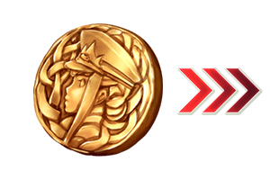 |
【活動限定概念禮裝】 【技能強化素材、靈基再臨素材】 【靈基再臨素材】 【其他道具】 |
◆可用泡麵交換的道具◆
|
【活動限定概念禮裝】 【技能強化素材、靈基再臨素材】 【靈基再臨素材】 【其他道具】 |
◆可用精選糖球交換的道具◆
| 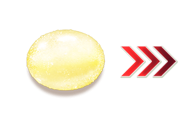 |
【活動限定概念禮裝】 【技能強化素材、靈基再臨素材】 【其他道具】 |
◆可用出星湯匙・卡路里肉・寶具槌子交換的道具◆
※在活動舉辦期間結束後才能交換。
| 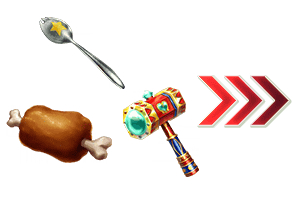 |
【其他道具】 |
以通過「終局特異點」及「Death Jail・夏日逃脫 ～罪與絶望的梅芙大監獄2017～」主線關卡的Master為對象開放高難易度關卡「挑戰關卡」。
通過挑戰關卡時，可獲得豪華報酬。
挑戰關卡就算在通過後也不會消失，能無數次挑戦，可以變更Servant和概念禮裝的組合後再次挑戰。
※關卡通過報酬、戰利品、MasterEXP、魔術禮裝EXP、絆點數只限在初次通過時獲得。
◆挑戰關卡参加條件◆
只限通過「終局特異點」及「Dead Jail・夏日逃脫 ～罪與絶望的梅芙大監獄2017～」全部主線關卡的Master才能参加
◆挑戰關卡初回通過報酬◆
伝承結晶
以期間限定在達文西工房的「魔力稜鏡交換」追加下述的道具。
|
◆交換期間◆ ◆追加道具◆ |
 |
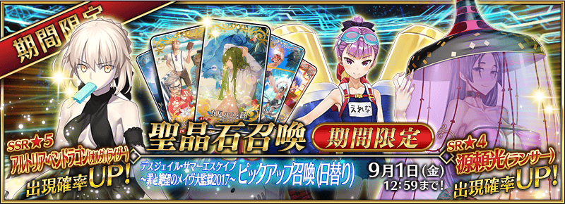
◆「Death Jail・夏日逃脫 ～罪與絶望的梅芙大監獄2017～ Pick Up召喚(每日交替)」期間◆
期間:2017年8月16日(三) 17:008月17日(四) 10:00～8月30日(三) 11:599月1日(五) 11:59
※舉辦期間延長。
※(8/25修正)
以期間限定舉辦「Death Jail・夏日逃脫 ～罪與絶望的梅芙大監獄2017～ Pick Up召喚(每日交替)」！
身穿適合夏日服裝的Servant「★5(SSR)阿爾托莉亞・潘德拉剛〔Alter〕(Rider)」「★4(SR)海倫娜・布拉瓦茨基(Archer)」「★4(SR)源頼光(Lancer)」以期間限定登場！
「★5(SSR)阿爾托莉亞・潘德拉剛〔Alter〕(Rider)」常駐Pick Up！
另外「★4(SR) 海倫娜・布拉瓦茨基(Archer)」「★4(SR)源頼光(Lancer)」以每日交替Pick Up！
詳情請在聖晶石召喚畫面左下的召喚詳細確認。
※阿爾托莉亞・潘德拉剛〔Alter〕(Rider)、海倫娜・布拉瓦茨基(Archer)、源頼光(Lancer)在Pick Up召喚期間結束後，不會追加到故事召喚。
裝備期間限定概念禮裝「★5(SSR)真夏のひと時」「★4(SR)キング・ジョーカー・ジャック」「★3(R)カルデア・ビーチバレー」的話活動道具的掉落獲得數會提升。
※「★3(R)カルデア・ビーチバレー」在Pick Up期間中，也能在友情點數召喚獲得。
Pick Up期間中，期間限定Servant、期間限定概念禮裝的出現機率提升！
10次召喚中確定1張★4(SR)以上和確定1位★3(R)以上的Servant！
※確定★4(SR)以上包含Servant和概念禮裝。
※所謂「出現機率提升」意指比同稀有度的Servant及概念禮裝出現機率更高的設定。
| 每日交替Pick Up期間 | 每日交替Pick Up內容 |
|---|---|
8月17日(四) 10:00～ 8月22日(二) 22:59 |
阿爾托莉亞・潘德拉剛〔Alter〕(Rider)、海倫娜・布拉瓦茨基(Archer)、源頼光(Lancer) |
| 8月22日(二) 23:00～ 8月24日(四) 22:59 |
阿爾托莉亞・潘德拉剛〔Alter〕(Rider)、海倫娜・布拉瓦茨基(Archer) |
| 8月24日(四) 23:00～ 8月26日(六) 22:59 |
阿爾托莉亞・潘德拉剛〔Alter〕(Rider)、源頼光(Lancer) |
| 8月26日(六) 23:00～ 9月1日(五) 11:59 |
阿爾托莉亞・潘德拉剛〔Alter〕(Rider)、海倫娜・布拉瓦茨基(Archer)、源頼光(Lancer) |
※(8/25修正)
※請注意會以每日交替變更Pick Up的Servant。
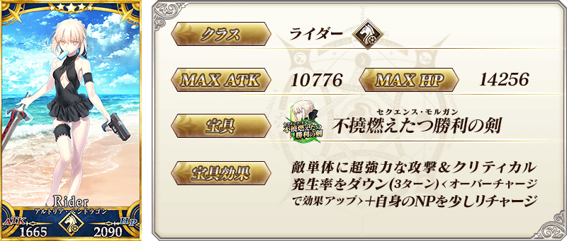
※(8/16修正)
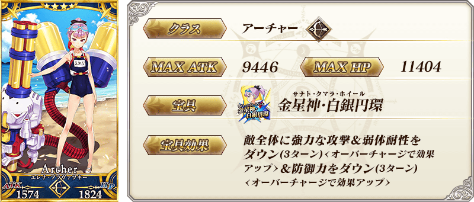
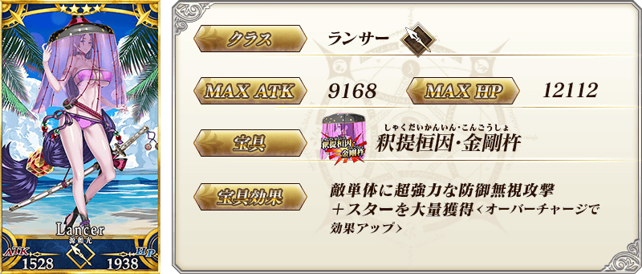
| 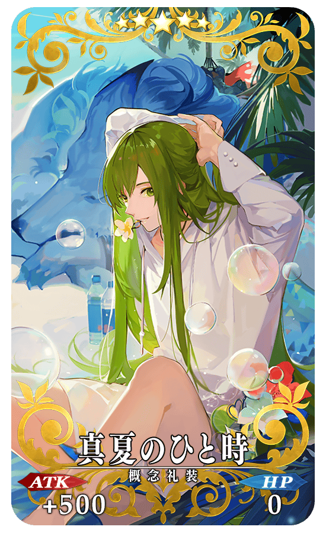 |
★★★★★SSR |
| 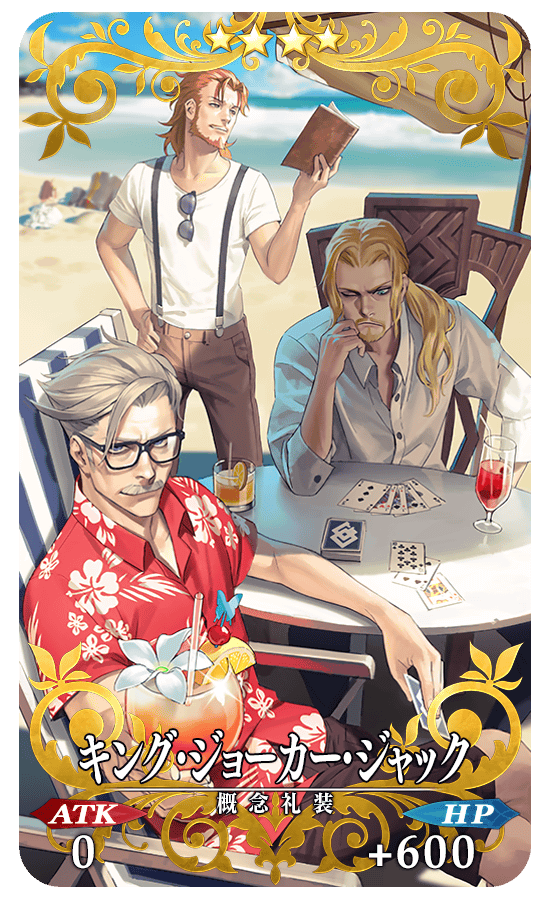 |
★★★★SR |
| 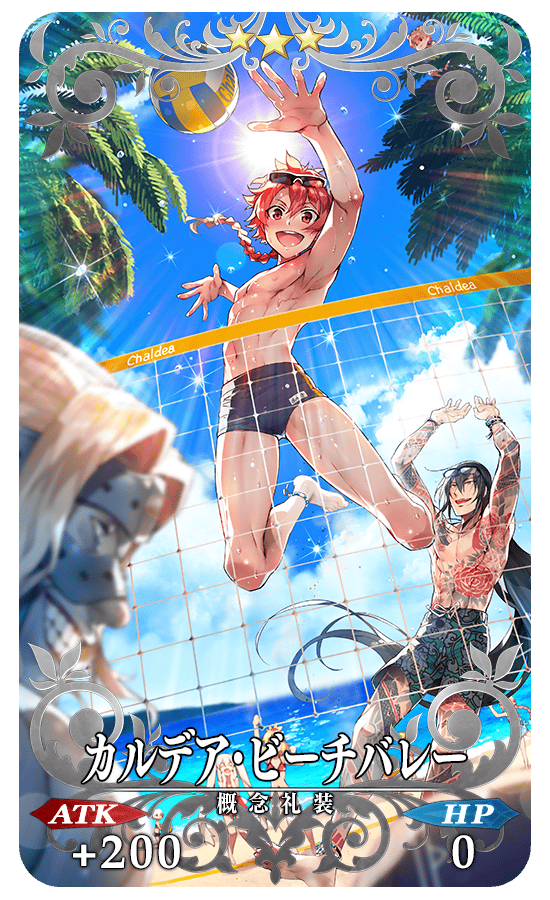 |
★★★R |
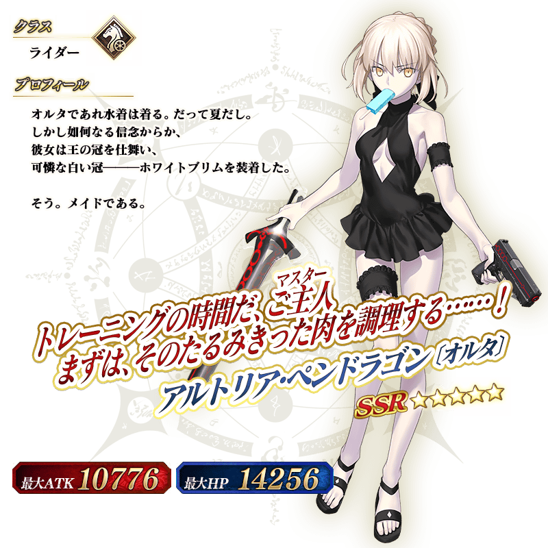
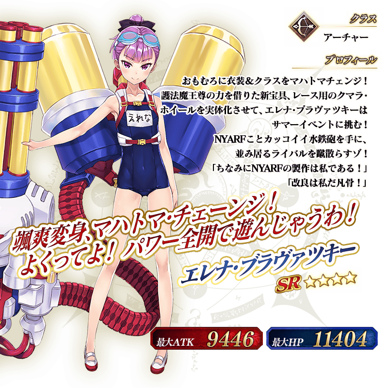
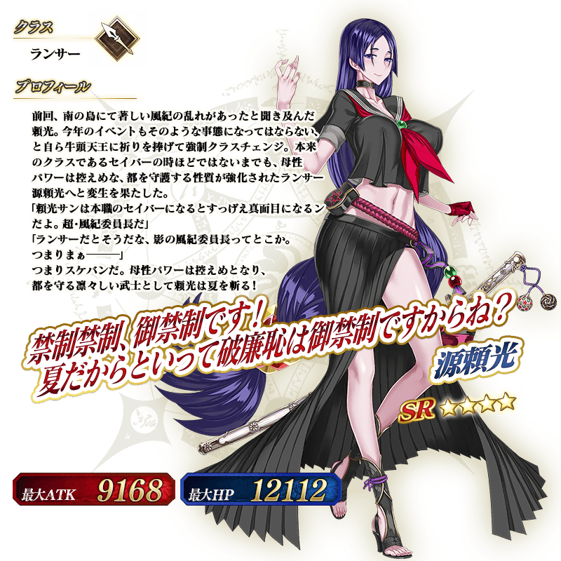